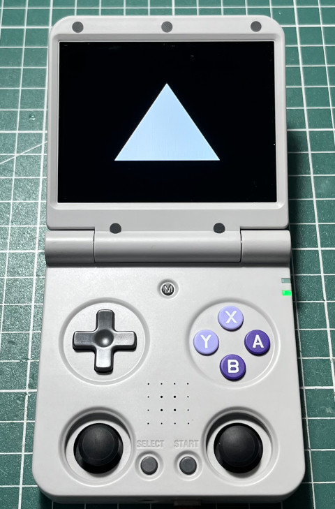

Steward
分享是一種喜悅、更是一種幸福
掌機 - Miyoo Flip - C/C++ - DRM/KMS - OpenGL ES 2.0 - Draw Triangle
參考資訊：
https://gist.github.com/dvdhrm/5083553
https://www.kernel.org/doc/html/v4.15/gpu/drm-kms.html
https://github.com/grate-driver/libdrm/blob/master/xf86drmMode.h
https://gist.github.com/Miouyouyou/89e9fe56a2c59bce7d4a18a858f389ef
main.c
#include <stdio.h>
#include <stdlib.h>
#include <string.h>
#include <fcntl.h>
#include <time.h>
#include <sys/mman.h>
#include <unistd.h>
#include <gbm.h>
#include <xf86drm.h>
#include <xf86drmMode.h>
#include <GLES2/gl2.h>
#include <GLES2/gl2ext.h>
#include <EGL/egl.h>
#include <EGL/eglext.h>
static int fd = -1;
static int fb = -1;
static int waiting_for_flip = 0;
static drmModeRes *res = NULL;
static drmModeCrtc *crtc = NULL;
static drmModeEncoder *enc = NULL;
static drmModeConnector *conn = NULL;
static void flip_handler(int fd, unsigned int frame, unsigned int sec, unsigned int usec, void *data)
{
*((int *)data) = 0;
}
const char *vShaderSrc =
"attribute vec4 vPosition; \n"
"void main() \n"
"{ \n"
" gl_Position = vPosition; \n"
"} \n";
const char *fShaderSrc =
"precision mediump float; \n"
"void main() \n"
"{ \n"
" gl_FragColor = vec4(1.0, 1.0, 1.0, 1.0); \n"
"} \n";
drmEventContext evctx = {
.version = DRM_EVENT_CONTEXT_VERSION,
.page_flip_handler = flip_handler,
};
int main(int argc, char *argv[])
{
const int w = 640;
const int h = 480;
const int bpp = 32;
const int depth = 24;
int i = 0;
int j = 0;
fd = open("/dev/dri/card0", O_RDWR | O_CLOEXEC);
res = drmModeGetResources(fd);
conn = drmModeGetConnector(fd, res->connectors[1]);
enc = drmModeGetEncoder(fd, res->encoders[2]);
crtc = drmModeGetCrtc(fd, res->crtcs[1]);
struct gbm_device *gbm = gbm_create_device(fd);
struct gbm_surface *gs = gbm_surface_create(gbm, crtc->mode.hdisplay, crtc->mode.vdisplay, GBM_FORMAT_XRGB8888, GBM_BO_USE_SCANOUT | GBM_BO_USE_RENDERING);
EGLint egl_major = 0;
EGLint egl_minor = 0;
EGLint num_configs = 0;
EGLConfig configs = {0};
EGLDisplay display = EGL_NO_DISPLAY;
EGLSurface surface = EGL_NO_SURFACE;
EGLContext context = EGL_NO_CONTEXT;
EGLint config_attribs[] = {
EGL_SURFACE_TYPE, EGL_WINDOW_BIT,
EGL_RENDERABLE_TYPE, EGL_OPENGL_ES2_BIT,
EGL_RED_SIZE, 1,
EGL_GREEN_SIZE, 1,
EGL_BLUE_SIZE, 1,
EGL_ALPHA_SIZE, 0,
EGL_NONE
};
EGLint const context_attributes[] = {
EGL_CONTEXT_CLIENT_VERSION, 2,
EGL_NONE,
};
GLuint vShader = 0;
GLuint fShader = 0;
GLuint pObject = 0;
GLint compiled = 0;
GLfloat vVertices[] = {
0.0f, 0.5f, 0.0f,
-0.5f, -0.5f, 0.0f,
0.5f, -0.5f, 0.0f
};
PFNEGLGETPLATFORMDISPLAYEXTPROC get_platform_display = NULL;
get_platform_display = (void *)eglGetProcAddress("eglGetPlatformDisplayEXT");
display = get_platform_display(EGL_PLATFORM_GBM_KHR, gbm, NULL);
eglInitialize(display, &egl_major, &egl_minor);
eglBindAPI(EGL_OPENGL_ES_API);
eglChooseConfig(display, config_attribs, &configs, 1, &num_configs);
surface = eglCreateWindowSurface(display, configs, gs, NULL);
context = eglCreateContext(display, configs, EGL_NO_CONTEXT, context_attributes);
eglMakeCurrent(display, surface, surface, context);
vShader = glCreateShader(GL_VERTEX_SHADER);
glShaderSource(vShader, 1, &vShaderSrc, NULL);
glCompileShader(vShader);
glGetShaderiv(vShader, GL_COMPILE_STATUS, &compiled);
fShader = glCreateShader(GL_FRAGMENT_SHADER);
glShaderSource(fShader, 1, &fShaderSrc, NULL);
glCompileShader(fShader);
glGetShaderiv(fShader, GL_COMPILE_STATUS, &compiled);
pObject = glCreateProgram();
glAttachShader(pObject, vShader);
glAttachShader(pObject, fShader);
glLinkProgram(pObject);
glUseProgram(pObject);
glViewport(0, 0, w, h);
glClearColor(0.0f, 0.0f, 0.0f, 1.0f);
glClear(GL_COLOR_BUFFER_BIT);
glVertexAttribPointer(0, 3, GL_FLOAT, GL_FALSE, 0, vVertices);
glEnableVertexAttribArray(0);
glDrawArrays(GL_TRIANGLES, 0, 3);
eglSwapBuffers(display, surface);
struct gbm_bo *bo = gbm_surface_lock_front_buffer(gs);
drmModeAddFB(fd, w, h, depth, bpp, gbm_bo_get_stride(bo), gbm_bo_get_handle(bo).u32, &fb);
drmModeSetCrtc(fd, crtc->crtc_id, fb, 0, 0, (uint32_t *)conn, 1, &crtc->mode);
waiting_for_flip = 1;
drmModePageFlip(fd, crtc->crtc_id, fb, DRM_MODE_PAGE_FLIP_EVENT, (void *)&waiting_for_flip);
while (waiting_for_flip) {
drmHandleEvent(fd, &evctx);
}
gbm_surface_release_buffer(gs, bo);
sleep(3);
eglMakeCurrent(display, EGL_NO_SURFACE, EGL_NO_SURFACE, EGL_NO_CONTEXT);
eglDestroyContext(display, context);
eglDestroySurface(display, surface);
drmModeRmFB(fd, fb);
drmModeFreeCrtc(crtc);
drmModeFreeEncoder(enc);
drmModeFreeConnector(conn);
drmModeFreeResources(res);
close(fd);
return 0;
}
編譯、執行
$ /opt/flip/bin/aarch64-linux-gcc main.c -O3 -o main -I/opt/flip/aarch64-flip-linux-gnu/sysroot/usr/include/libdrm -ldrm -lEGL -lGLESv2 -lgbm root@rk3566-buildroot:/mnt/SDCARD# ./main
